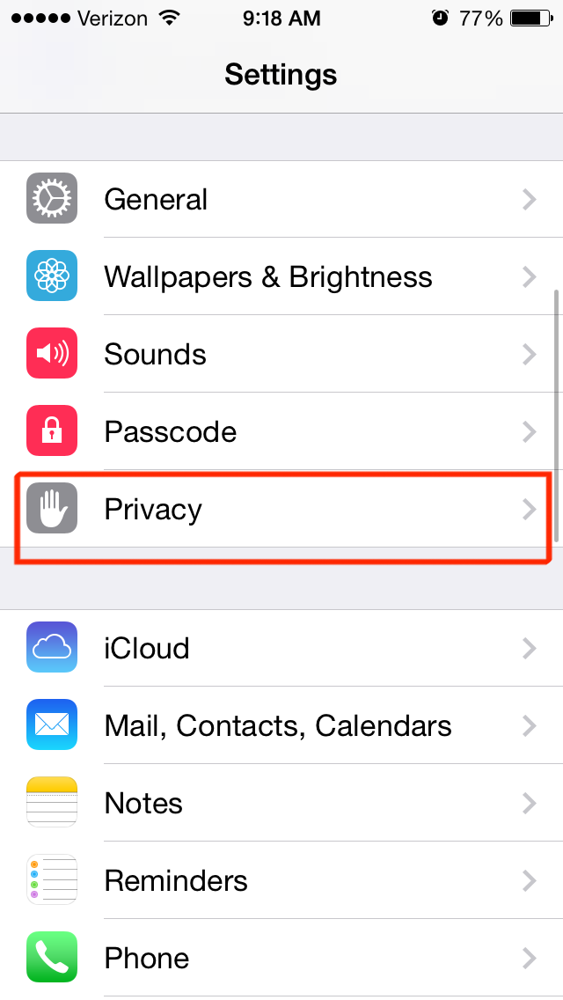
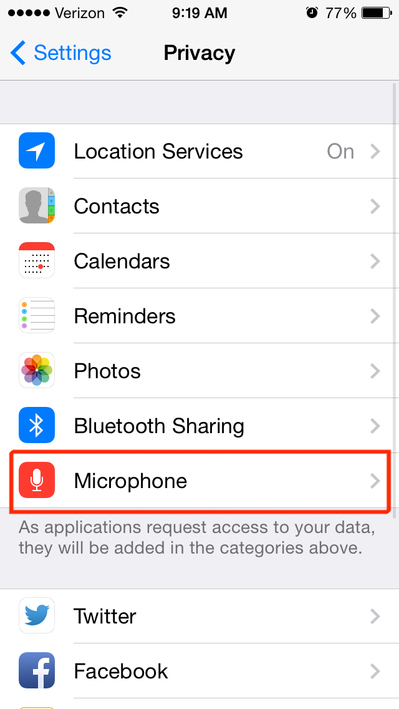
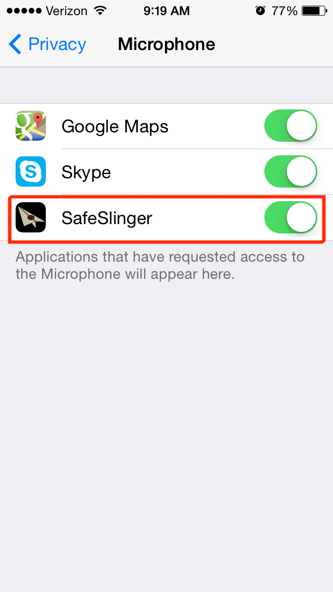

How to Re-enable Microphone Access Permission.
This page helps iOS users to re-enable their microphone access for SafeSlinger.

Step1: To to the Settings panel and select 'Privacy' to configure microphone access permission control. |

Step2: Select Microphone to continue. |

Step3: Turn on access for SafeSlinger app. |
Questions?